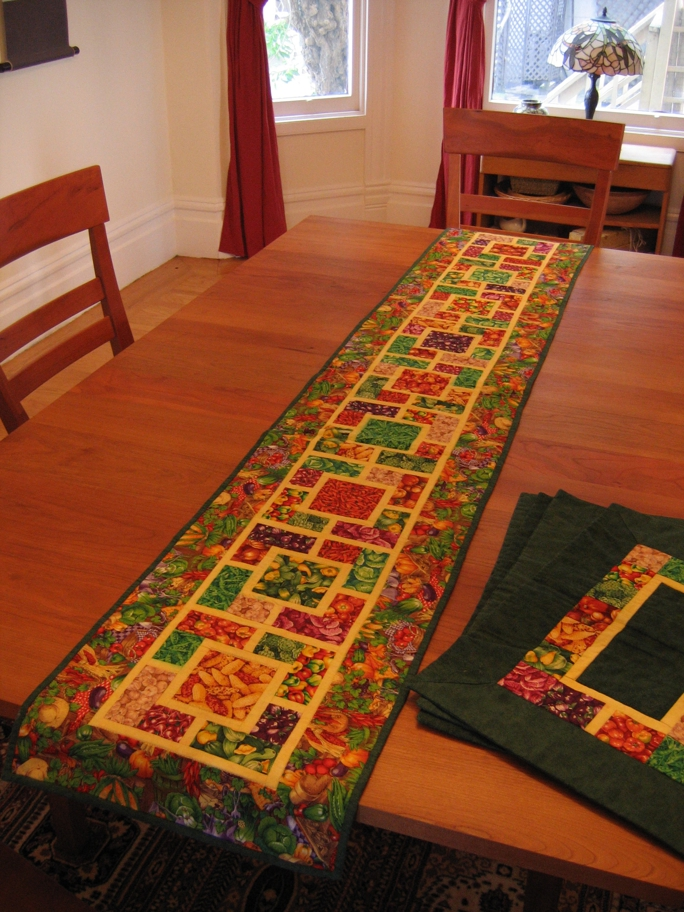

Summer Veggies was inspired by fabrics found in the Keepsake Quilting catalog. As I came up with a design I incorporated more veggies, of the same fabric line, which I found at quilt shows. A different company later came out with a similar line but of a larger scale. I was happy I found the smaller ones as they were much more suited to the scale of the project they inspired and were such fun that I made four place mats to go with the runner. The yellow paths are for the sunshine every good vegetable garden needs.